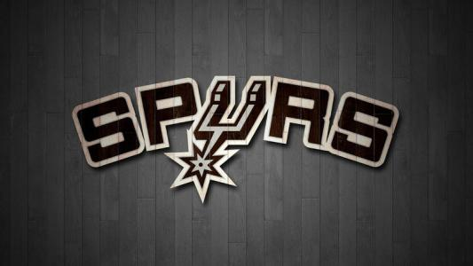

圣安东尼奥马刺队
目录：
1976-1985：“冰人”时期
1976年6月，ABA与NBA合并。圣安东尼奥马刺队、丹佛掘金队、印第安纳步行者队和纽约网队入驻NBA。这四支原ABA球队同意赔款给其他两支没有加盟NBA而倒闭的ABA强队，这项合同迫使四队面临严酷的财政压力。1976年10月22日，马刺迎来在NBA的首场比赛，客场对阵J博士领衔的费城76人，以121-118赢得开门红。在12月对阵堪萨斯国王队的比赛中，马刺队前锋拉里·肯农以11次抢断创造了NBA纪录。尽管詹姆斯·塞拉斯因伤缺席了60场比赛，马刺队还是在他们的第一个NBA赛季中获得了44胜38负、排名联盟第6的好战绩，之后波士顿凯尔特人队在季后赛首轮中横扫了马刺队。
1977-78赛季，乔治·格文在最后一个比赛日拿到单场63分，以史上最微弱的差距战胜大卫·汤普森成为当年的得分王。在格文的率领下，马刺首次成为赛区冠军，以52胜30负进入季后赛，但在季后赛首轮遗憾不敌华盛顿子弹队。
1978-79赛季，马刺队在联盟中掀起了进攻旋风，以平均每场119.3的得分排名联盟第一。场均得到29.6分的乔治·格文成为NBA历史上第一个连续两年得到得分王荣誉的后卫球员。赛季结束时马刺队以48胜34负的成绩连续第二年在中部分区排名第一。季后赛在东区决赛中再次不敌华盛顿子弹队。
1979-80赛季，乔治·格文以33.1的场均得分连续第三年成为得分王，投篮次数和命中数上均排名联盟第一。他同时在1980年的NBA全明星赛中砍下34分10板，获选全明星赛MVP。马刺队以41胜41负的战绩结束赛季，之后在季后赛首轮中被休斯敦火箭队淘汰出局。
1980-81赛季，马刺队被划分入了西部的中西部赛区，和休斯敦、堪萨斯、丹佛、犹他以及新军达拉斯小牛队一个赛区。球队聘请斯坦·阿尔贝克成为新任主教练，轻松的以52胜30负的成绩拿下了四年里的第三个分区冠军，但在西部半决赛中3-4不敌休斯敦火箭队被淘汰。
1981-82赛季，马刺队在171比166战胜密尔沃基雄鹿队的比赛中获得了NBA历史第二高的得分，以48胜34负再次拿下中西部分区的冠军，随后在西部决赛中被洛杉矶湖人队横扫。
1982-83赛季，马刺队在得分、篮板、盖帽以及助攻上都排名联盟第二，以53胜29负的战绩排名西部第二。然而季后赛再次在西部决赛中以2-4被洛杉矶湖人队淘汰出局。
1983-84赛季，由于斯坦·阿尔贝克跳槽、乔治·格文状态下滑，以及约翰尼·摩尔和阿蒂斯·吉尔摩尔因伤病缺席半数比赛，马刺队陷入低谷，以37胜45负的成绩排名西部第九，首次无缘季后赛。球队获得首支选秀乐透签，以首轮第7顺位选中了埃尔文·罗伯特森。
1984-85赛季，马刺队聘请科顿·菲茨西蒙斯为主教练，以41胜41负的战绩在中西部分区中和犹他并列第四。随后在季后赛首轮被丹佛掘金队淘汰。在休赛期，乔治·格文被交易到芝加哥公牛队，标志着马刺自搬到圣安东尼奥以来所创造的一个辉煌时代的结束。返回介绍
1985-1989：重建时期
1985-86赛季，失去了乔治·格文的马刺队在头两个月取得19胜13负。但在12月26日，约翰尼·摩尔被确诊患上了沙漠热症，这种罕见的疾病不仅使他缺席了这个赛季，也提前终止了他的职业生涯。球队最终创下了搬至圣安东尼奥后的最差战绩：35胜47负，与季后赛彻底无缘。二年级新秀埃尔文·罗伯特森在赛季中表现出色，获得了最佳防守球员和进步最快球员奖项，并入选了全明星。2月18日，他成为了NBA有史以来第二个得到四双的球员：20分，11个篮板，10个助攻和10次抢断。
1986-87赛季，马刺队以28胜54负的成绩排名中西部赛区垫底。罗伯特森再次成度成为抢断王和最佳防守球员。1987年5月17日，马刺队抽到了选秀状元签。在6周之后的NBA选秀大会中，球队钦点美国海军学院的大卫·罗宾逊为状元秀。但马刺需要等到1989-90赛季才能看到他真正上场打球，因为他必须在美国海军服役两年。
1987-88赛季，球队取得31胜51负的成绩，在季后赛首轮被洛杉矶湖人队横扫。
1988-89赛季，马刺队迎来了新教练拉里·布朗，他的助教团队包括格雷格·波波维奇和R.C.布福德。然而伤病严重困扰了球队，最终仅获得21胜61负的成绩。在当年的选秀大会上，马刺以第三顺位选择了肖恩·埃利奥特。返回介绍
1989-1997：“上将”时期
1989-90赛季，在大卫·罗宾逊结束兵役加盟并交易得到特里·卡明斯和罗德·斯特里克兰后，马刺队从最差的球队一跃成为最好的球队，以56胜26负结束赛季并排名中西部分区第一。比上一赛季多赢35场比赛的成绩也是NBA历史上球队胜场进步最大的纪录。大卫·罗宾逊在赛季的每个月都拿下了月度最佳新秀，24.3分和12.0个篮板的数据在队内均排名第一。他当选为年度最佳新秀并入选了西部全明星阵容。西部半决赛对阵波特兰开拓者队的比赛中，马刺在第7场经过加时105比108落败。
1990-91赛季，马刺队以55胜27负连续第二年获得中西部分区的冠军。但球队在季后赛首轮就遇到了挫折，44胜的金州勇士队靠场均101回合的狂奔下克上击败了马刺队。
1991-92赛季，球队开局表现不佳，老板麦库姆斯在1992年1月解雇了布朗和他手下的全部教练团队。担任球队运作方面副总裁的鲍勃·巴斯在17年中第四次临危受命，出任球队主教练。在巴斯的带领下，球队在赛季后期打出26胜18负，总成绩达到47胜35负，排名中西部分区第二。但马刺队在季后赛中有所作为的希望由于大卫·罗宾逊和威利·安德森的伤缺而变得渺茫，最终在首轮中被菲尼克斯太阳队横扫。
1992-93赛季，马刺队聘请杰里·塔坎尼安为新任主教练。塔坎尼安短暂的执教在6周后就宣告结束，留下9胜11负的战绩。随后约翰·卢卡斯被授予主教练的职责。马刺队在这名前NBA后卫的带领下打出了灵气十足的比赛，在他接手后的18场比赛中赢下了16场。1993年3月26日，圣安东尼奥马刺队易主，瑞德·麦库姆斯将他的股份以7500万美元的价格卖给了皮特·霍尔特领导的12名投资者组成的财团。在季后赛第二轮对阵菲尼克斯太阳队的比赛中马刺被查尔斯·巴克利绝杀出局。
1993-94赛季，马刺队用肖恩·埃利奥特从底特律活塞队交易来了丹尼斯·罗德曼。罗德曼的到来使上个赛季进攻篮板排名联盟倒数第一的马刺队一跃而攀升到了第一。赛季的最后一天，大卫·罗宾逊在对阵洛杉矶湖人的比赛中砍下70分，从沙奎尔·奥尼尔手中抢过了得分王的头衔，这也使得他成为了NBA历史上第四名在单场比赛中得分超过70分的球员。马刺队以55胜17负的成绩排名中西部分区第二。但是在同犹他爵士队的季后赛中首轮比赛被横扫出局。赛季结束后，约翰·卢卡斯离开圣安东尼奥，前往费城76人队担任总经理兼主教练。马刺队新老板皮特·霍尔特邀请时任勇士队助教的波波维奇重返马刺，担任球队总经理。波波维奇积极运作希望聘请老尼尔森来马刺执教，但勇士队老板拒绝放人，波波维奇只得选择鲍勃·希尔做了他任下的第一任主帅。
1994-95赛季，马刺队打出了62胜20负的战绩，排名NBA第一，刷新了球队的历史最佳战绩。这个赛季的开局并不理想，在罗德曼禁赛的情况下，马刺取得了7胜9负的成绩。但马刺队在其后的比赛中打出了55胜11负，其中包括了2次15连胜。他们在常规赛的最后23场比赛中取得了21胜2负。多名球员表现优异。大卫·罗宾逊场均27.6分、10.8个篮板、3.2个盖帽，荣膺常规赛MVP并入选最佳防守阵容一阵。马刺用选秀得到的比尔·柯利与底特律活塞队交易换回了旧将肖恩·埃利奥特，他场均得到18.1分。尽管罗德曼错过了33场比赛，他还是连续第四年拿下篮板王（16.8个）并且入选最佳阵容第三阵以及最佳防守阵容一阵。季后赛中，马刺队在首轮横扫了丹佛掘金队，第二轮4比2击败洛杉矶湖人队，然后在与休斯敦火箭队进行了6场西部决赛后败下阵来。休赛期马刺队用丹尼斯·罗德曼从芝加哥公牛队交换来了中锋威尔·普度。
1995-96赛季，马刺以59胜23负的成绩连续第二年拿下了中西部分区第一。3月份，球队取得16战全胜的完美战绩，追平了1971-72年洛杉矶湖人队创造的NBA历史最佳月度战绩。季后赛第二轮，马刺队在和犹他爵士队大战六场后被淘汰。
1996-97赛季，马刺队中伤兵满营，上一赛季球队得分前6的球员中有4名因伤错过大半比赛，大卫·罗宾逊整个赛季仅仅出场6次。球队创造了NBA历史上赛季胜场减少最多的纪录，从59胜降到了仅仅20胜，自大卫·罗宾逊加盟以来首次缺席季后赛。主教练鲍勃·希尔在3胜15负的开局后被辞退，而接替他的原总经理格雷格·波波维奇在担任NBA主教练的第一个赛季中仅仅取得了17胜47负的成绩。1997年5月18日马刺再次获得了NBA选秀的状元签，球队选择了来自维克森林大学的具有统治力的明星球员蒂姆·邓肯。返回介绍
1997-2003：双塔时期
1997-98赛季，在大卫·罗宾逊伤愈复出，以及蒂姆·邓肯加入之后，马刺队又再次完成了NBA历史上单个赛季上最大的胜场进步，球队赢下了56场比赛并打入了季后赛第二轮。邓肯毫无悬念地获得年度最佳新秀奖。在同犹他爵士队的西部半决赛第二场中，邓肯扭伤了脚踝，爵士队经过加时以109比106获胜。马刺队最终以1比4输掉了系列赛。
1998-99赛季，NBA因为劳资纠纷一度停摆，常规赛也因此从82场缩水到50场。马刺仅取得6胜8负的开局，主教练波波维奇因此饱受批评，但是球队领袖邓肯和罗宾逊都对他表示了坚定的支持，球队随后以31胜5负的战绩收尾。马刺在季后赛首轮3比1战胜森林狼，次轮4比0横扫湖人，西部决赛横扫开拓者，最终杀入总决赛，并以4比1战胜了纽约尼克斯队，这是马刺队历史上首次获得NBA总冠军，邓肯以27.4分、14个篮板和2.2次盖帽当选为总决赛MVP。选秀大会中，马刺队在次轮第57顺位选中来自阿根廷的马努·吉诺比利。之后吉诺比利继续留在意大利打球，到2002年才正式登陆NBA。
1999-00赛季，马刺取得了53胜29负的战绩，但是由于球队领袖邓肯半月板撕裂无缘季后赛，马刺在季后赛第一轮以1比3不敌太阳，遭到淘汰。
2000-01赛季，马刺取得了58胜24负的佳绩。季后赛第一轮3比1淘汰森林狼，西部半决赛4比1淘汰小牛。西部决赛中，马刺被当时如日中天的湖人队横扫。选秀大会中，马刺以首轮第28顺位选中19岁的法国控卫托尼·帕克。
2001-02赛季，马刺再次取得58胜24负的战绩，邓肯获得常规赛MVP。西部半决赛马刺以1比4不敌湖人队。
2002-03赛季，马刺更新了“嘉年华彩色”队标，回归原始的银、黑图形，以纪念大卫·罗宾逊的最后一个赛季。马刺取得了60胜22负的常规赛成绩，这是波波维奇担任主帅以来首次率队取得60胜战绩，他也获得了自己的首个年度最佳教练奖。季后赛第一轮，马刺以4比2淘汰太阳。西部半决赛4比2淘汰老对手湖人，西部决赛4比2淘汰小牛。总决赛，马刺击败篮网，赢得第二座NBA总冠军奖杯。邓肯包揽了常规赛和总决赛的MVP。他在总决赛中场均砍下24.2分17个篮板5.33次封盖5.3次助攻，加冕的第6战更是劈下21分20个篮板10次助攻8次盖帽的逆天数据，险些成为总决赛上达成四双壮举的历史第一人。返回介绍
2003-2016：GDP时期
2003-04赛季，球队以9胜10负开局，然而，马刺在年底连胜13场，重返联盟榜首。马刺以一个11连胜为常规赛收尾，但可惜以一场之差错失赛区冠军和西部最佳历史成绩。季后赛中，马刺4场横扫孟菲斯灰熊队。第二轮，马刺再度遭遇湖人队。湖人队在先输两场的情况下连扳四场。这个系列赛的转折点是德里克·费舍尔在第5场比赛还剩下0.4秒时投中了压哨的致胜球。
2004-05赛季，马刺队从西雅图得到了后卫布伦特·巴里，从纽约得到了中锋纳兹尔·穆罕穆德并签下老将格伦·罗宾逊，以59胜23负的战绩结束常规赛，在西南分区排名第一，西部排名第二。季后赛中，马刺以4比1轻取丹佛掘金队，4比2击败西雅图超音速队，4比1淘汰菲尼克斯太阳队。总决赛对阵拉里·布朗率领的底特律活塞队，马刺先声夺人，场均赢18分保住两个主场，移师底特律后活塞还以颜色，场均赢24分将大比分扳成2比2。天王山之战两队使出浑身解数，进入加时赛还是难分伯仲，最后时刻罗伯特·霍里2+1帮助马刺96:95险胜。活塞拿下第6战后双方进入抢七，马刺最终以81:74加冕。7场总决赛邓肯场均20.6分14.1个篮板2.1次盖帽，再次收下FMVP奖杯。
2005-06赛季，马刺得到了两届全明星迈克尔·芬利和全明星尼克·范埃克塞尔，前19场比赛取得16场胜利，并最终荣登西南区头名，同时将球队历史最佳战绩刷新为63胜19负。季后赛首轮马刺4比2淘汰国王队。西部半决赛上对阵同为60+胜的达拉斯小牛，首场邓肯砍下全场最高的31分，帮助马刺87比85艰难取胜。第二场，马刺在主场22分之差惨败小牛。移师达拉斯再战，小牛连胜两场，将总比分扩至3-1。第五场，背水一战的马刺全队疯抢篮板，以98-97赢下肉搏战。第六场马刺91比86力克小牛，把“抢七”大战带回AT&T中心。第七场决战，马刺在常规时间末节展开反扑，抹平了20分的分差，将比赛拖入加时。但是加时赛上小牛火力全开轰下15分，最终以119-111战胜了马刺。
2006-07赛季，马刺开局14场比赛中赢了11场。12月2日战胜国王队后，马刺超越凯尔特人，以59.5%的胜率成为了NBA历史上常规赛胜率第二高的球队。在常规赛末段的31场比赛中，马刺成为了联盟里胜率最高的球队（25胜6负），最终以联盟第一的防守和58胜24负的常规赛战绩进入季后赛。首轮比赛马刺4比1淘汰丹佛掘金队。次轮邓肯以场均30.2分12.5个篮板3.1记盖帽带领马刺4-2淘汰菲尼克斯太阳队。西部决赛马刺4-1轻取犹他爵士。随后在总决赛中以4比0横扫勒布朗·詹姆斯率领的克利夫兰骑士队，再夺总冠军，成为NBA历史上继凯尔特人、湖人、公牛队后，第四支夺得4次及以上总冠军的NBA球队。托尼·帕克以场均24.5分5个篮板3.3次助攻当选总决赛MVP，成为NBA历史上首个外籍FMVP。休赛期马刺股东买下了NBA发展联盟的奥斯汀公牛队（后改名奥斯汀马刺队），成为第二支拥有发展联盟球队的NBA球队。
2007-08赛季，马刺打出了17胜3负的强劲开局，以56胜26负的成绩以排名西部第三挺进季后赛。季后赛首轮马刺4-1淘汰菲尼克斯太阳队。次轮鏖战7场后险胜克里斯·保罗领衔的新奥尔良黄蜂队，与湖人会师西部决赛，但最终1-4遗憾结束卫冕之旅。选秀大会上，马刺队以第37顺位选中了乔治·希尔。
2008-09赛季，三连败的开局创造了1973年以来的球队最差开局。马努·吉诺比利因为右脚踝扭伤只打了44场比赛。托尼·帕克打出了职业生涯的得分和助攻新高。马刺以54胜28负结束常规赛，位列西部第三、西南赛区第一。但在季后赛首轮中1-4不敌达拉斯小牛队。选秀大会前两天，马刺将布鲁斯·鲍文、科特·托马斯和法布里西奥·奥博托三位老将送至密尔沃基雄鹿队，换来29岁的锋卫摇摆人理查德·杰弗森。
2009-10赛季，马刺在常规赛中饱受伤病困扰，不过还是取得了50胜的战绩。季后赛首轮，马刺再次遭遇达拉斯小牛队。尽管第一场落败，马刺最终还是4比2爆冷击败了西部第二的小牛队，创造了首轮7场4胜制下第一个“黑七奇迹”，但在第二轮惨遭菲尼克斯太阳队横扫。
2010-11赛季，马刺取得常规赛西部第一，总排名第二的好成绩。邓肯和吉诺比利在常规赛最后阶段连遭伤病，致使季后赛首轮马刺2比4不敌西部排名第八、由内线“黑白双塔”扎克·兰多夫和马克·加索尔领衔的孟菲斯灰熊队，惨遭“黑八”。在选秀大会上，马刺将乔治·希尔送至印第安纳步行者队，换来15号秀科怀·伦纳德。
2011-12赛季，马刺队开局仅取得12胜9负战绩，但在剩余的55场常规赛中他们仅输掉7场，以50胜16负的战绩与东部的公牛队并列联盟第一。波波维奇当选为年度最佳教练。马刺连续第15次杀入季后赛，连续第13年获得50胜，均创NBA纪录。西部决赛前两场，马刺大比分2比0领先俄克拉荷马雷霆队，但之后雷霆连下四城，4比2淘汰马刺。
2012-13赛季，马刺取得58胜24负，排名西部第二。季后赛首轮4比0横扫湖人。第二轮4-2淘汰勇士。西部决赛4-0横扫灰熊。总决赛前五场，马刺3比2领先迈阿密热火队，第六场最后7秒，雷·阿伦射中关键一球，帮助热火加时获胜，将总决赛拖进抢七局。第七场，马刺88比95不敌热火，遗憾获得亚军。
2013-14赛季，马刺开季前14战取得13胜，11月上中旬也顺利打出一波11连胜，创造了队史最佳开局。全明星周末后，马刺连胜19场，3月份的单月战绩为全胜，最终以62胜20负的常规赛排名联盟第一。常规赛马刺没有一名球员的场均上场时间达到30分钟，是ABA和NBA合并以来首支能做到这一点的球队。波波维奇第三度获得年度最佳教练殊荣。季后赛首轮马刺4比3淘汰小牛队。西部半决赛4比1淘汰开拓者队。西部决赛4比2淘汰雷霆队，再度与卫冕冠军热火队会师总决赛。最终马刺4比1夺冠，捧起了第五座总冠军奖杯。五场比赛中马刺总计以528-458净胜热火70分，刷新NBA总决赛历史系列赛最大分差。22岁零351天的三年级球员科怀·伦纳德获得总决赛MVP，成为NBA历史上第一位90后的FMVP，也是有史以来第三年轻的获奖者（第一、二名都是魔术师）。休赛期马刺续约波波维奇、邓肯和帕克，并用第30顺位选秀权选择了来自UCLA的凯尔·安德森。
2014-15赛季，常规赛最后一场，马刺输给鹈鹕，掉至西部第六。季后赛首轮面对洛杉矶快船队，双方战至第七场，最终快船凭借保罗终场前1秒准绝杀战胜马刺。休赛期马刺续约科怀·伦纳德和丹尼·格林，签下转会市场上最大牌的自由球员拉马库斯·阿尔德里奇，并以老将底薪签约大卫·韦斯特。
2015-16赛季，马刺在2015年12月8日119-68大胜76人的比赛中以51分的净胜分创造了队史赢球最大分差纪录，并成为NBA历史上唯一一支连续六个赛季都能够取得10连胜的球队。常规赛结束时马刺以67胜15负的战绩刷新队史记录，同时收获40胜1负的主场战绩，追平凯尔特人在1985-86赛季创造的历史最佳单赛季主场纪录。季后赛首轮马刺4-0淘汰灰熊，西部半决赛2-4不敌雷霆。休赛期，蒂姆·邓肯宣布退役。马刺签约保罗·加索尔、大卫·李、德维恩·戴德蒙，并用第29顺位选秀权选择了德章泰·默里。
2016-17赛季，马刺在揭幕战中以129-100客场大胜勇士。开局取得4连胜，追平队史最佳开局连胜纪录。返回介绍
@Copyright|版权本人所有，未经本人允许，盗版必究